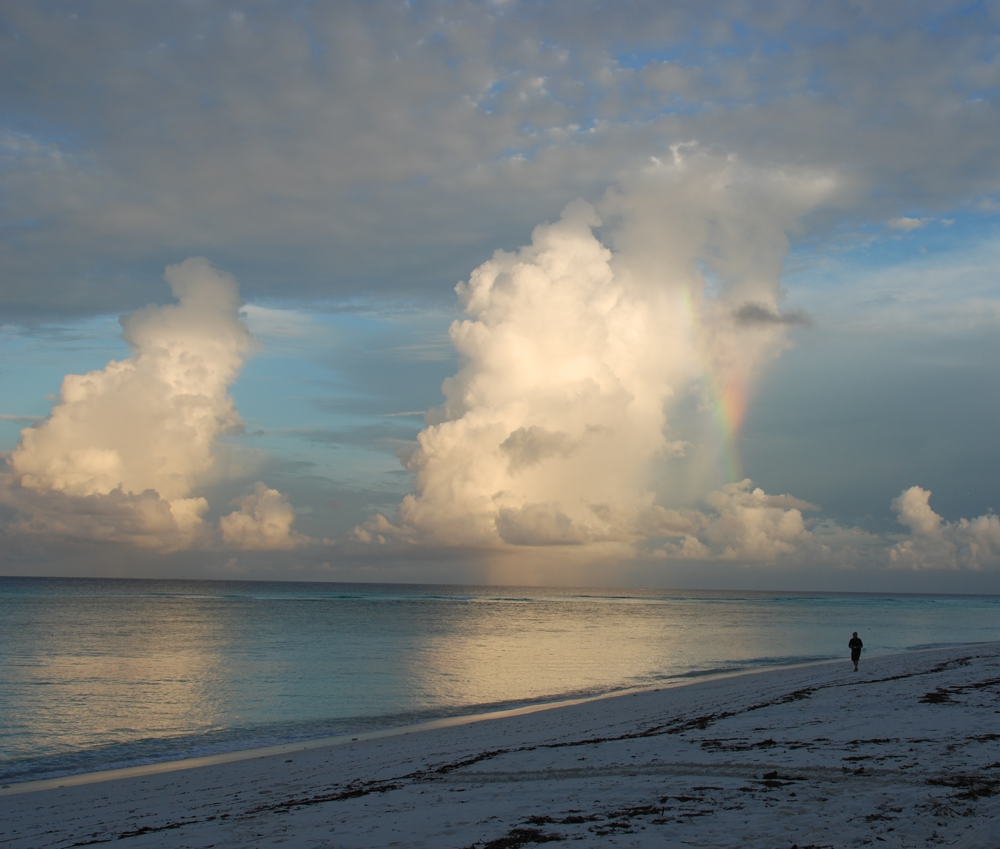
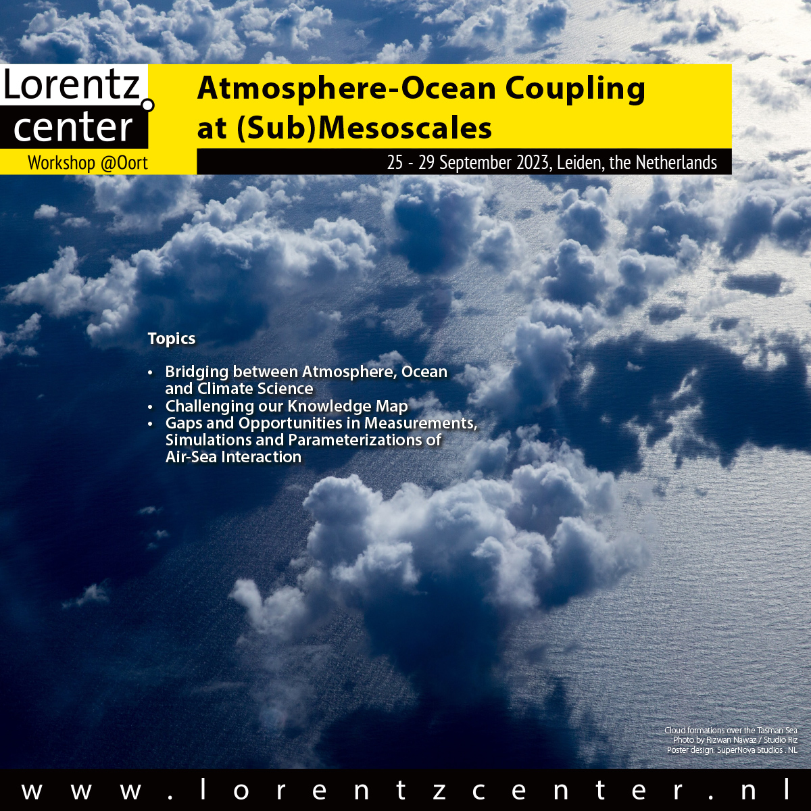

Louise Nuijens
Atmospheric science at Delft University of Technology
We study the physical processes involved in the interaction of convection and clouds with atmospheric winds and circulations using field observations, high-resolution simulations and theory. A strong focus is on physical interactions at horizontal scales smaller than a 100 km. We are particularly interested in the impact of such physical interactions on air-sea coupling, regional weather and climate and collaborate closely with Dutch and European weather centers to improve the representation of such processes in atmospheric models.
Read more about our research themes and recent activities, check out the funded M2 and VIDI projects, read the highlights of my (completed) ERC Starting Grant Cloudbrake, or meet our group.

Air-sea interaction
Marine convective clouds, especially when they rain, can lead to large wind variability, even at the ocean surface. We investigate the influence of such wind heterogeneity on the exchange of momentum between the atmosphere and ocean, the wind stress, using ultra-high resolution satellite observations of ocean surface roughness (SAR), combined with simulations (LES) and local lidar measurements.
Convective momentum transport

The transport of momentum through convective circulations is broadly called convective momentum transport (CMT). CMT is parameterized in weather and climate models and its uncertainty hampers accurate prediction of wind. We use novel wind lidar and cloud radar observations and large-domain large-eddy simulations to derive momentum fluxes driven by convection, and use these to validate models.
Clouds and circulations
Shallow cumulus and congestus clouds are crucial to the vertical distribution of heat, moisture and momentum in the lowest kilometers of the atmosphere, which is important for the Hadley/Walker circulation and the mesoscale circulations that organize (tropical) convection. Using both conceptual and numerical weather prediction models our group works to unravel how convection is coupled to circulations.
Nov 2024: Our workshop white paper on the physics and impact of the air-sea interaction submesoscale can now be found on the OpenSky repository https://doi.org/10.5065/78ac-qd31.
Aug 2024: The TUD wind lidar (Windcube 200s) is brought to Cape Verde to start its journey across the Atlantic ITCZ during a six-week cruise on board of the RV Meteor as part of the BOWTIE component of the ORCESTRA campaign.
Sept 2024: The TUD wind lidar (Windcube 200s), after arriving on Barbados at the end of the BOWTIE cruise, is temporarily hosted on top of one of the Barbados Cloud Observatory containers to perform a variety of scanning routines looking out over open ocean, exposed to a myriad of beautiful trade-wind convection.


The frictional layer in the trades
Central to the ERC StG CloudBrake project was the question: how does trade-wind convection influence the large-scale wind? Does it accelerate or decelerate the flow, and at what height levels? To answer these questions we analyzed the momentum budget observed over a 200 km circular area during the EUREC4A field study in Jan-Feb 2020. Interpreting the residual in the budget as the action of turbulence, convection and mesoscale flows, we find that the wind is decelerated over a layer on average ~ 1.5 km deep, but that friction-induced ageostrophic wind turning of wind is weak. An acceleration of wind is also observed in the upper cloud layer and trade-inversion. The observations suggest that convection and mesoscale circulations play a key role in the observed momentum transport.
Momentum transport over land
Shallow cumulus convection is very typical over land in the midlatitudes in Spring and Summer. As part of the ERC StG CloudBrake project, we analyzed observations and simulations of winds, momentum transport and clouds to investigate how cumulus convection influences wind near the surface and aloft. Analyses focused on a 9-year climatology of Cabauw observations and daily limited-domain LES hindcasts to reveal differences in wind profiles and momentum transport with cloud and weather regimes. We also carried out a dual-airplane flight mission measuring the profile of wind with airborne Doppler wind lidar as well as turbulence below and through clouds.
Wind shear effect on clouds
As part of the ERC StG CloudBrake project we explored the sensitivity of trade-wind convection, cloudiness and its organization to vertical wind shear. Does wind shear limit or enhance convection? And how does moisture aggregation and cloud organization change in the presence of forward or backward shear?

Trimodal convection
In nature, moist convection prefers three modes: shallow, congestus and deep cumulus. Using a conceptual model, can we understand what processes help set the depth of convection in tropical circulations?

Warm rain over oceans
Warm rain is that produced by clouds with tops below the freezing level. Observations reveal that warm rain is a significant part of rainfall over global oceans, with implications for atmospheric dynamics.

Vertical structure of low cloud
Global models disagree on how low clouds respond to increasing carbon dioxide concentrations, and observations show how this behavior relates to the vertical structure of low cloud produced by models.